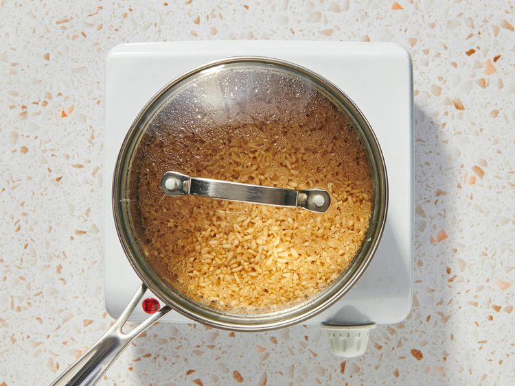

Gather all Ingredients.

Bring water, soy sauce, and salt to a boil in a medium saucepan. Stir in instant rice and remove from heat. Cover and let stand for 5 minutes.
Heat oil in a medium skillet or wok over medium heat. Sauté onions and green beans or peas in hot oil for 2 to 3 minutes.
Pour in beaten egg and fry for 2 minutes, scrambling egg while it cooks.
Add cooked rice to egg mixture; mix well. Season with pepper.